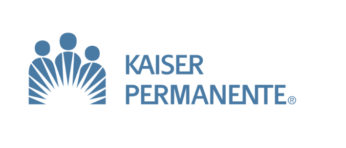
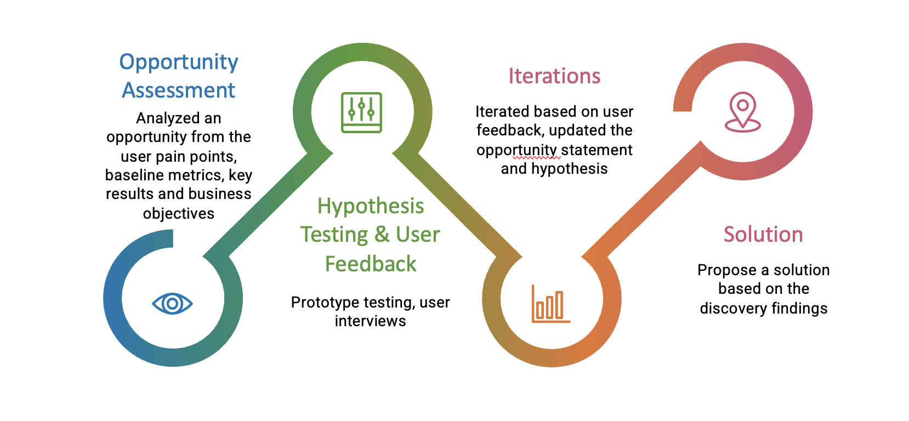
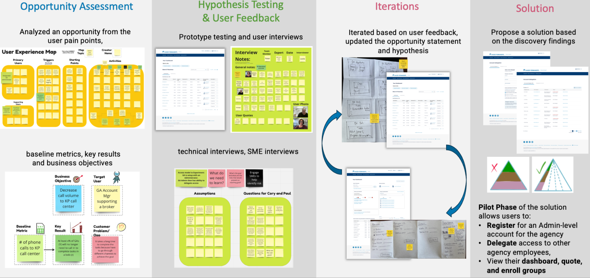
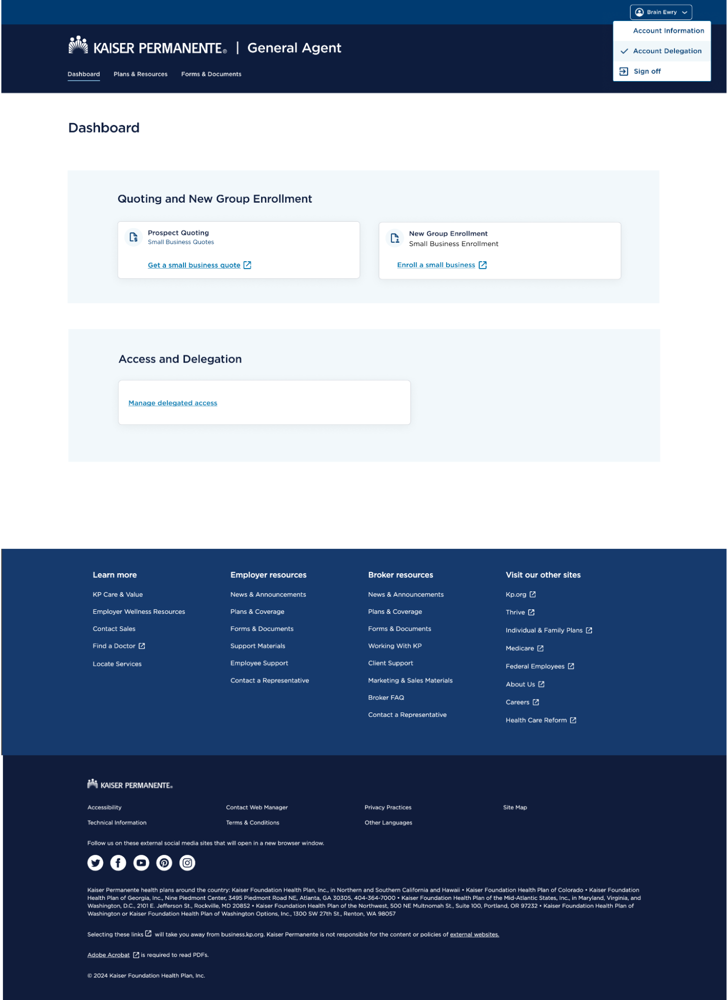
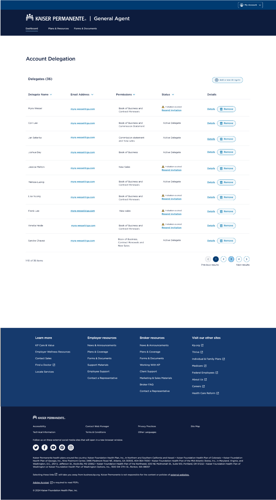

Kaiser Permanente for Business Partners, Brokers, and General Agents is a set of services, portals, and support programs
that help insurance professionals sell, manage, and service Kaiser Permanente health plans for employers and individuals.
View Website
- Timeline
- Most Recent
- Role
- Senior UX Designer
- team
- Senior UX Designer(me)
- Product Manager
- Growth Analyst
- 7 Developers
- QA Manager
- Copy Writer
- Methods
- User Interviews
- User Testing
- Stakeholders meeting
- Journey Mapping
- Wireframing
- Prototyping
- QA using JIRA
Role & SCOPE
Led 0 -> 1 Design through engineering handoffAs a sole designer at KP’s Customer and Channel Partners team, I led end to end design of its first self service business platform for the General Agents from concept to interaction model to the shipped product handoff to engineering team. It is rolling out across KP'S business platform. I owned the design system, content strategy, and conversational UX for the self-service General Agent and Broker platform, simplifying complex insurance workflows for brokers and general agents.
To understand our users, I started with a deep dive into the personas and user journey. From there, I designed multiple rounds of wireframes, iterating on feedback from user testing and stakeholders. I led weekly meetings with the stakeholders to walk them through my design decisions and prototypes. Once wireframes were approved, I worked with a copywriter to match the brand voice. Finally, I participated in QA and worked with the developers for the final handoff.

Problem and Opportunity
Relying on KP support is overwhelmingUnlike many other insurance carriers, Kaiser Permanente does not provide General Agents with self-service access to their Book of Business in Account.kp. As a result, General Agents must rely on phone calls and emails to KP support to sell, manage, and service Kaiser Permanente health plans for employers and individuals.
"It would save me so much time if I could manage these tasks myself instead of depending on someone else." - General Agent
My Discovery Cycle
My discovery process was centered on understanding the problem before jumping into solutions. I started by exploring user pain points, business goals, and existing metrics to identify where General Agents were struggling most. From there, I formed hypotheses and validated them through user interviews and prototype testing. Each round of feedback helped refine the opportunity statement, challenge assumptions, and uncover new insights. This iterative approach ensured the final solution addressed real user needs while supporting Kaiser Permanente's business objectives.

The Users
Empowering General Agents Through Better ExperiencesGeneral Agents serve as trusted partners who support small group brokers throughout the entire health insurance sales and servicing journey. They act as an extension of Kaiser Permanente, helping brokers navigate complex processes such as quoting, underwriting, enrollment, renewals, licensing, and ongoing account management.
Because General Agents support multiple brokers and employer groups simultaneously, they need efficient tools and self-service capabilities to quickly access information, resolve issues, track progress, and provide timely guidance.Their goal is to simplify complex workflows, reduce dependency on support teams, and help brokers deliver a seamless experience for their clients.

My Design Approach
I followed a discovery-driven process grounded in evidence rather than assumptions. Starting with an opportunity assessment, I mapped the user experience of General Agency administrators to surface pain points, then framed the problem around a measurable goal: reducing call volume to the KP call center caused by tasks that couldn't be completed in a single channel. I then documented our assumptions as testable questions and validated them through prototype testing, user interviews, and technical and SME sessions — separating real user needs from internal beliefs and surfacing risks early.

Each round of feedback reshaped both the design and the problem definition itself: I updated the opportunity statement and hypothesis, iterating from paper sketches to higher-fidelity dashboard prototypes to keep the feedback loop fast. The findings converged on a self-service solution — a pilot that lets agency users register for an admin-level account, delegate access to employees, and view their dashboard, quotes, and group enrollment, directly eliminating the need to call in for routine tasks.
User Flow
Mapping the journey from complexity to confidenceBefore designing any screens, I wanted to truly understand what it takes for a General Agency to get access in the first place — so I sketched out the entire journey, from the moment a GA firm starts working with a broker who has a Book of Business with Kaiser, all the way to a GA admin confidently granting access to their own team. Laying it out step by step was eye-opening: this wasn't one person's journey, but a relay between brokers, KP staff, and GA admins — and if any handoff stumbled, users ended up right back on the phone with the call center. As questions came up — Who validates the request? What happens when a customer opts out? Do GAs even need individual licenses? — I captured them directly on the map and worked through them with SMEs. What started as a simple diagram became our shared source of truth, and those conversations shaped the registration, activation, and role-assignment experience at the heart of the pilot.

Access Model
This is where the design had to meet the realities of security. Working with technical SMEs, I helped shape a flow where KP staff first enter the GA admin's info into a system of record — the source of truth for broker-GA relationships. From there, the admin self-registers at account.kp.org, gets verified with a one-time activation code, and unlocks secure features like their firm's book of business. My favorite part is what happens next: the admin can now add their own delegates, each receiving an access code to self-register the same way. That loop was the whole point — agencies onboarding their own teams without a single phone call, while KP keeps the validation checkpoints that make the access trustworthy.

Solution
The GA DashboardThe dashboard became the front door to everything a General Agency needs — a single platform serving GAs across all US regions, built to help them maintain their Book of Business for every broker and employer they support. I kept the design intentionally focused: quoting and new group enrollment sit front and center since those are the most frequent tasks, while "Manage delegated access" gives admins a clear path to onboard their team. No clutter, no hunting through menus — just the things GAs used to call the KP call center for, now one click away.

This screen is where the delegation model comes to life. GA admins can see their entire team at a glance — who has access, what permissions they hold, and whose invitations have expired — and take action right from the table: resend an invite, view details, or remove someone in a click. I designed the permissions to be granular, so an admin can give one person just the Book of Business while another handles commission statements and new sales. What used to require a phone call to Kaiser for every single access change is now something agencies manage themselves, in seconds, with full visibility and control.

this projects but happy to discuss on a call.